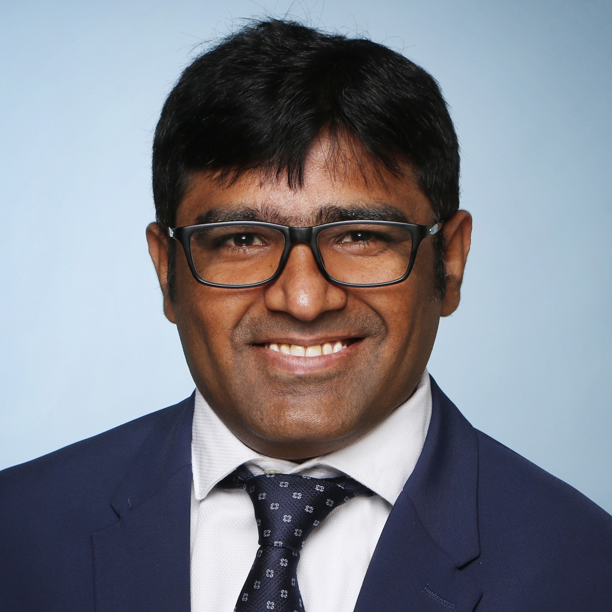

smart_toy
Agentic AI
MCP, RAG and LLM agents shipped to production
Rafique Nazir · AI Engineer
I turn language models into reliable products: agents, RAG, and the Model Context Protocol, built on more than ten years of backend engineering and AWS.

From the model layer down to the infrastructure that runs it in production.
Agent orchestration and tool use: Just-In-Time tool discovery over the Model Context Protocol (MCP), RAG pipelines with chunking and reranking, semantic tool retrieval with embeddings, plus guardrails and fallback chains that keep agents predictable.
Tracing multi-step agent conversations with Langfuse and OpenTelemetry, LLM-as-a-Judge evaluation that checks tool selection and output validity, and prompt engineering for cost and reliability in production.
AWS Certified Solutions Architect, Associate. Hands-on with Amazon Bedrock (Foundation Models, Agents, Knowledge Bases, Guardrails), SageMaker, Amazon Q, and vector stores on OpenSearch and Aurora pgvector. Cloud design across EC2, S3, IAM, VPC, RDS, and CloudWatch.
Asynchronous Python microservices with FastAPI and asyncio, PostgreSQL with SQLAlchemy, Redis, and event streaming with Kafka and RabbitMQ. Kubernetes, Docker, Terraform, and Helm, with CI/CD, Prometheus, Grafana, and Pytest.
Technologies I have worked with across roles.
A decade of backend engineering, now focused on production AI.
Systems I have designed and shipped, from agents to cloud platforms.
Enterprise agentic automation at BITA. JIT tool discovery over MCP with ChromaDB retrieval, LLM-as-a-Judge evaluation, guardrails and fallback chains, and full Langfuse / OpenTelemetry tracing.
Production conversational-AI assistant for Deutsche Telekom built with Rasa, spaCy NLU, and FastAPI. Drove a 60% increase in bookings on Kubernetes with Redis caching.
Hands-on RAG and agent builds on Amazon Bedrock: Knowledge Bases with chunking and embeddings, Bedrock Agents and Guardrails, and vector search on OpenSearch and Aurora pgvector.
Middleware at arago translating Customer Service Management items to and from the HIRO AI engine. Designed the test strategy and built test automation over Oracle RDBMS.
Master’s thesis at TU Darmstadt: an end-to-end document understanding pipeline that grades scanned exams, combining OCR (Google Cloud Vision, Azure Computer Vision), OpenCV layout analysis, and NLP answer scoring. Applied AI work, years before the LLM era.
Software-defined cloud at Connectloud, built on top of multiple clouds for secure, multi-tenant automation across data centers. Built Java REST services, Liferay portlets, and an Ext JS UI.
National University of Computer & Emerging Sciences (FAST NUCES)
Verified cloud, AI, and academic credentials.
Course · 2025
Udemy · 2025
ForgeRock · 2020
B1 & B2 certified · 2025
National merit scholarship, Ministry of IT, Pakistan · four years fully funded for the B.Sc. at FAST NUCES, Karachi
View awardees list →Event information extraction from emails (title, time, location, participants) using NLP and finite-state automata. Published by the research group in the Sindh University Research Journal, 2011.
Open to AI Engineer roles. Reach me by email or on LinkedIn.